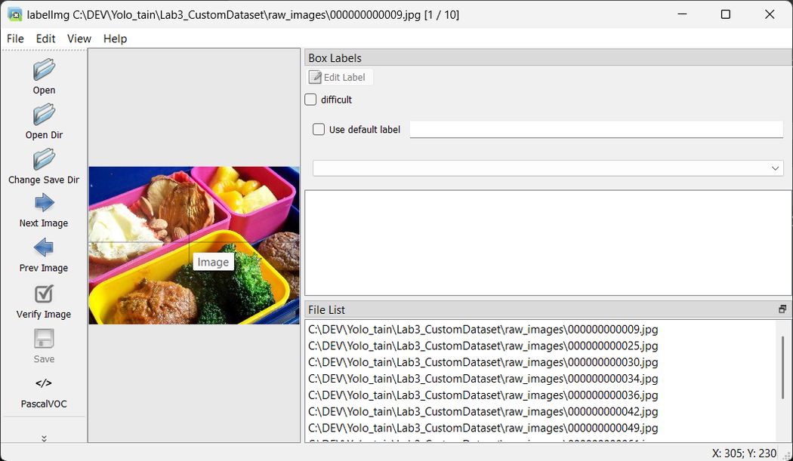
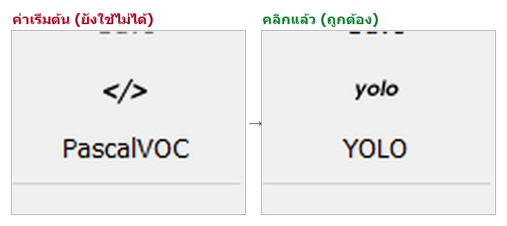
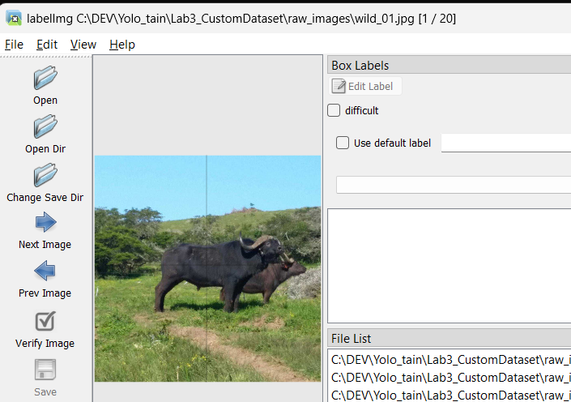
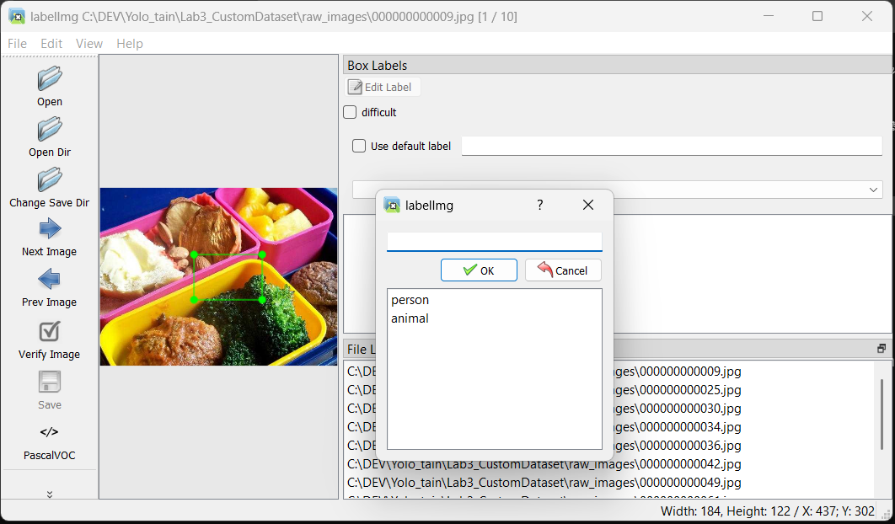
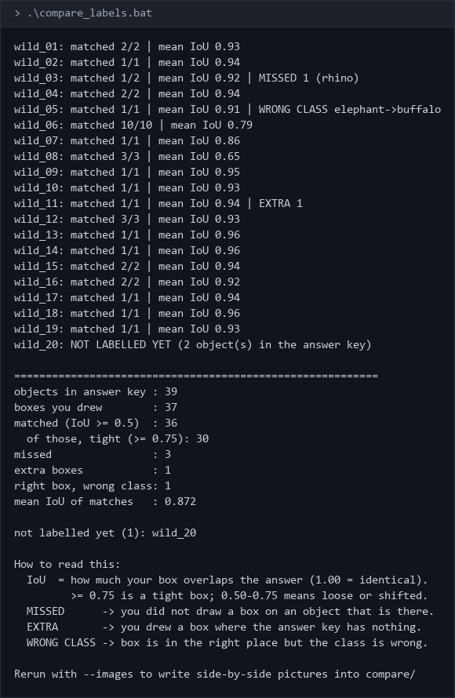
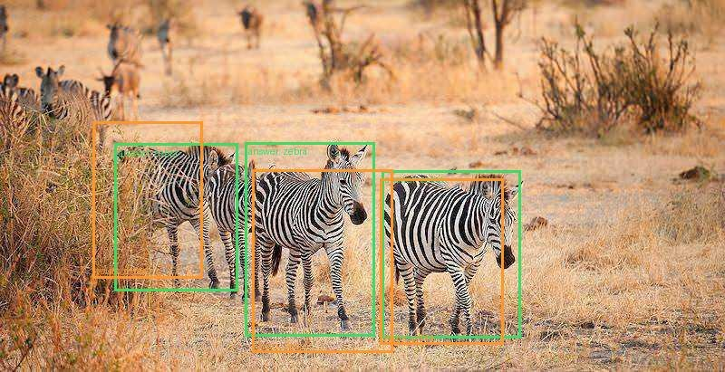

Lab นี้ต่างจาก Lab อื่นตรงที่ มีเฉลย — รูปที่ใช้ฝึกมาจากชุดข้อมูล african-wildlife
ซึ่งมีคนทำ label ไว้แล้ว สคริปต์จะซ่อนเฉลยไว้ให้เรา label เองก่อน แล้วค่อยเทียบทีหลังว่าทำได้ดีแค่ไหน
อย่าไปวางหรือแก้ไฟล์ใน dataset\ เองเพราะจะถูกเขียนทับทุกครั้งที่รัน split_dataset.bat
cd Lab3_CustomDataset\scripts .\get_practice_images.bat
สคริปต์จะดาวน์โหลดชุด african-wildlife (ครั้งแรก ~100 MB) แล้วคัดรูปมา 20 ใบ ให้กระจายครบทั้ง 4 คลาส
พร้อมย้ายไฟล์เฉลยไปเก็บไว้ที่ answer_key\ และเขียน classes.txt ให้เสร็จ
Preparing the african-wildlife dataset (first run downloads ~100 MB) Copied 20 images to C:\dev\Yolo_tain\Lab3_CustomDataset\raw_images Answer key kept separately in C:\dev\Yolo_tain\Lab3_CustomDataset\answer_key (do not peek yet) Wrote classes.txt: buffalo, elephant, rhino, zebra Objects in the answer key, by class: elephant 15 zebra 11 rhino 7 buffalo 6
ทุกคนจะได้รูปชุดเดียวกัน (สคริปต์ตรึงค่าสุ่มไว้) จึงเทียบผลกันในห้องได้
answer_key\ ดูก่อน label เสร็จ — ไม่ได้ห้ามเพราะเป็นข้อสอบ แต่ถ้าแอบดูแล้ว จะไม่ได้ฝึกสายตาตัวเอง ซึ่งเป็นจุดประสงค์ทั้งหมดของ Lab นี้buffalo elephant rhino zebra
classes.txt สำคัญมาก — บรรทัดแรกคือ class id 0, บรรทัดที่สองคือ 1 ไปเรื่อย ๆ ทั้ง labelImg และ data.yaml ใช้ลำดับนี้ร่วมกัน ถ้าสลับบรรทัดทีหลัง label เดิมทั้งหมดจะเพี้ยน.\make_dataset_structure.bat
จะได้โครงสร้าง:
ถ่ายรูปเองดีที่สุด เพราะโมเดลจะเจอสภาพแสง มุมกล้อง และพื้นหลังแบบเดียวกับตอนใช้งานจริง — ถ้าโครงงานคือคัดแยกของบนสายพาน ก็ควรถ่ายจากกล้องที่ติดตั้งจริงบนสายพานนั้น ตั้งเป้าที่ 100-200 ภาพต่อคลาส และให้แต่ละคลาสมีจำนวนใกล้เคียงกัน
ส่วนกรณีที่อยากได้ข้อมูลเสริม หรืออยากลองโจทย์ใหม่เร็ว ๆ ใช้แหล่งเหล่านี้ได้:
หลังทำ Lab 1 เสร็จ Ultralytics จะโหลดชุด COCO8 (8 ภาพ) ไว้ในเครื่องแล้ว หา path ได้จาก:
yolo settings
ดูค่า datasets_dir แล้วรูปจะอยู่ที่ <datasets_dir>\coco8\images\train\ และ ...\val\ — ก๊อปมาวางใน raw_images\ ได้เลย (ก๊อปเฉพาะ .jpg ไม่ต้องเอา .txt จะได้ฝึกลากกรอบเอง)
อีกชุดคือภาพตัวอย่างของ Lab 2 ที่ Lab2_Inference\samples\
| ลิงก์ | ในภาพมีอะไร |
|---|---|
https://ultralytics.com/images/bus.jpg | คน 4 คน + รถบัส |
https://ultralytics.com/images/zidane.jpg | คน 2 คน |
https://github.com/ultralytics/assets/releases/download/v0.0.0/coco8.zip | ชุด COCO8 ทั้งก้อน (8 ภาพ + label, ~1 MB) |
โหลดผ่าน Python ได้เลยโดยไม่ต้องเปิดเบราว์เซอร์ (สั่งใน venv ที่ activate แล้ว):
python -c "import urllib.request as u; u.urlretrieve('https://ultralytics.com/images/bus.jpg', 'Lab3_CustomDataset/raw_images/bus.jpg')"
| แหล่ง | ลิงก์ | จุดเด่น |
|---|---|---|
| Roboflow Universe | universe.roboflow.com | ชุดข้อมูล ที่ label มาแล้ว หลายแสนชุด เลือก Export เป็นฟอร์แมต "YOLOv8" ได้ตรง ๆ — ถ้าใช้แหล่งนี้ข้าม Step 3-4 ไปได้เลย แค่แตกไฟล์ลง dataset\ |
| Kaggle Datasets | kaggle.com/datasets | ชุดข้อมูลหลากหลายมาก ต้องสมัครสมาชิก (ฟรี); บางชุดเป็นรูปเปล่าต้อง label เอง |
| Open Images Dataset | openimages (Google) | ภาพหลายล้านใบพร้อม bounding box ครอบคลุม 600 คลาส เหมาะเวลาอยากได้คลาสทั่วไป เช่น คน/รถ/ขวด |
.\install_labelimg.bat .\run_labelimg.bat
สคริปต์จะเปิด labelImg มาที่โฟลเดอร์ raw_images\ ให้เลย พร้อมโหลดชื่อคลาสจาก classes.txt

[1 / 10]เช็ก 2 อย่างทันทีที่เปิด: File List ทางขวาต้องมีรายชื่อรูปครบ และหัวหน้าต่างต้องขึ้นเลข [1 / N] ถ้าว่างเปล่าแปลว่าสคริปต์ชี้ path ผิด (ดู Troubleshooting ท้ายหน้า)

PascalVOC เสมอ ซึ่งเซฟเป็นไฟล์ .xml คนละฟอร์แมตกับที่ YOLO ใช้.xml ที่ split_dataset.bat มองไม่เห็นเลยสักไฟล์ — เสียเวลาฟรีทั้งหมด ตรวจให้แน่ใจว่าขึ้นคำว่า YOLO ก่อนเริ่มลากกรอบแรก และค่านี้จะรีเซ็ตกลับทุกครั้งที่เปิดโปรแกรมใหม่W เข้าโหมดวาดกรอบ
X: 316; Y: 221 ตามเมาส์ไปด้วยลากคลุมวัตถุ: กดเมาส์ค้างที่มุมหนึ่ง → ลากไปมุมตรงข้าม → ปล่อย ลากให้กรอบชิดขอบวัตถุพอดี อย่าเผื่อพื้นที่ว่างเยอะ เพราะโมเดลจะเรียนพื้นหลังไปด้วย

classes.txt ที่สคริปต์ส่งให้ (ของ Lab นี้จะเป็น buffalo / elephant / rhino / zebra) ส่วนแถบล่างของหน้าต่างบอกขนาดกรอบที่เพิ่งวาดclasses.txt ซึ่งจะทำให้เลข class id เพี้ยนทั้งชุด ถ้าในรายการไม่มีคลาสที่ต้องการ ให้ปิดโปรแกรม ไปเพิ่มบรรทัดใน classes.txt ก่อน แล้วค่อยเปิดใหม่| ปุ่ม | ทำอะไร |
|---|---|
W | เริ่มวาดกรอบใหม่ (ต้องกดทุกครั้งก่อนวาดแต่ละกรอบ) |
Ctrl + S | บันทึก — ได้ไฟล์ .txt ชื่อเดียวกับภาพ วางข้างกันใน raw_images\ |
D / A | ไปรูปถัดไป / ย้อนกลับ |
Del | ลบกรอบที่เลือกอยู่ |
Ctrl + + / Ctrl + - | ซูมเข้า/ออก (ช่วยมากตอนวัตถุเล็ก) |
Ctrl+S ทุกรูป — labelImg ไม่บันทึกให้อัตโนมัติ ถ้ากด D ข้ามไปเลยโดยไม่เซฟ งานที่วาดไว้จะหายทันทีraw_images\ ดูว่ามีไฟล์ .txt ชื่อเดียวกับรูปโผล่มาคู่กันหรือยังไฟล์ .txt ที่ได้จะหน้าตาแบบนี้ — 1 บรรทัด = 1 กรอบ:
0 0.481250 0.523611 0.287500 0.338889 1 0.712500 0.455556 0.181250 0.216667
| ตำแหน่ง | ความหมาย |
|---|---|
| เลขตัวแรก | class id — ตรงกับลำดับบรรทัดใน classes.txt (บรรทัดแรก = 0) |
| 4 เลขถัดมา | x_center y_center width height ของกรอบ หารด้วยขนาดภาพแล้ว จึงอยู่ระหว่าง 0-1 เสมอ |
ที่เก็บเป็นสัดส่วน 0-1 แทนพิกเซล เพราะจะได้ย่อ/ขยายภาพยังไงค่าก็ยังถูก — ตอน Train ที่ YOLO ย่อทุกภาพเป็น 640x640 ค่าพวกนี้จึงใช้ได้เลยโดยไม่ต้องแปลง
label ครบทั้ง 20 รูปแล้ว (อย่าลืม Ctrl+S ทุกรูป) ให้รัน:
.\compare_labels.bat

| คำที่เห็นในรายงาน | แปลว่า |
|---|---|
matched 3/3 | mean IoU 0.93 | วาดครบทุกวัตถุ และกรอบทับกับเฉลยเฉลี่ย 93% — ดีมาก |
| IoU (Intersection over Union) | ตัววัดว่ากรอบสองอันซ้อนทับกันแค่ไหน = พื้นที่ส่วนที่ทับกัน ÷ พื้นที่รวมทั้งสองกรอบ 1.00 = วาดตรงเป๊ะ · ≥ 0.75 = กรอบแนบดี · 0.50-0.75 = หลวมหรือเยื้อง · < 0.50 = ถือว่าคนละวัตถุ ตัวเดียวกับที่ YOLO ใช้ตัดสินว่าโมเดลทายถูกไหมตอนคิด mAP ใน Lab 4-5 |
MISSED 1 (rhino) | ลืม label — ในภาพมีแรดแต่เราไม่ได้วาดกรอบให้ โทษหนักที่สุด เพราะโมเดลจะเรียนว่า "แรดตัวนี้คือพื้นหลัง" |
EXTRA 1 | วาดกรอบเกินมาในที่ที่เฉลยไม่มีอะไร |
WRONG CLASS elephant->buffalo | วาดกรอบถูกตำแหน่ง แต่เลือกคลาสผิด (เลือก elephant ทั้งที่เฉลยเป็น buffalo) |
NOT LABELLED YET | ยังไม่ได้ label รูปนั้นเลย หรือลืมกด Ctrl+S |
.\compare_labels.bat --images

ภาพจะถูกเขียนไว้ที่ Lab3_CustomDataset\compare\ เปิดดูทีละรูปได้เลย
MISSED เลย, ไม่มี WRONG CLASS และ mean IoU รวม ≥ 0.85.\split_dataset.bat
สคริปต์จะแบ่งภาพ 80% เป็น train, 20% เป็น val แล้วเขียน data.yaml ให้อัตโนมัติจาก classes.txt — ไม่ต้องแก้ nc/names เองแล้ว
Done. train=16 val=4 Classes (4): buffalo, elephant, rhino, zebra data.yaml written to C:\dev\Yolo_tain\Lab3_CustomDataset\dataset\data.yaml
ถ้ามีรูปที่ยังไม่ได้ label สคริปต์จะเตือนให้ด้วย:
WARNING: 1 image(s) have no .txt label and will count as background: - wild_20.jpg
ได้ data.yaml หน้าตาแบบนี้ — ไฟล์นี้คือสิ่งที่ Lab 4 จะเอาไปใช้เทรน:
train: images/train val: images/val nc: 4 names: ['buffalo', 'elephant', 'rhino', 'zebra']
raw_images\, label, แล้วรัน split_dataset.bat ใหม่ สคริปต์จะล้าง dataset\ แล้วแบ่งใหม่ทั้งหมดให้split_dataset.bat จะเตือนให้ว่ามีภาพไหนบ้างที่ยังไม่ได้ label| อาการ | วิธีแก้ |
|---|---|
เปิด labelImg มาแล้วช่องกลางว่าง ไม่มีรูป และ File List ทางขวาก็ว่าง — ทั้งที่หัวหน้าต่างขึ้นชื่อไฟล์กับ [1 / 10] แล้ว |
เป็นอาการหน้าต่างไม่ยอมวาดใหม่ (repaint) ตอนเปิด ไม่ใช่ path ผิด — สังเกตว่าหัวหน้าต่างรู้จำนวนไฟล์อยู่แล้ว แปลว่าโปรแกรมอ่านโฟลเดอร์เจอครบ วิธีแก้: ปิดแล้วเปิด .\run_labelimg.bat ใหม่ (ได้ผลเกือบทุกครั้ง) หรือลองขยายหน้าต่างเต็มจอ/ลากขอบหน้าต่างให้ Qt คำนวณขนาดใหม่ถ้าเปิดใหม่แล้ว File List ยังว่างจริง ๆ และหัวหน้าต่างไม่มีเลข [1 / N] ค่อยสงสัยเรื่อง path — เช็กว่ามีรูปอยู่ใน Lab3_CustomDataset\raw_images\ จริงไหม |
labelImg เด้งปิดตอนลากกรอบ พร้อมข้อความTypeError: arguments did not match any overloaded call: drawLine(...) |
labelImg 1.8.6 หยุดพัฒนาตั้งแต่ปี 2021 และเข้ากันไม่ได้กับ PyQt5 รุ่นใหม่ — install_labelimg.bat จะรัน patch_labelimg.py แก้ให้อัตโนมัติแล้ว ถ้ายังเจอ ให้รัน python patch_labelimg.py ซ้ำ (รันซ้ำได้ไม่มีผลข้างเคียง) |
Train ใน Lab 4 แล้วขึ้นDataset ... images not found, missing path 'C:\...\dataset\images\val' เป็น path แปลก ๆ ที่ไม่มีอยู่จริง |
เกิดจากใส่คีย์ path: แบบ relative ใน data.yaml — Ultralytics จะ resolve จาก datasets_dir ส่วนกลาง (ดูได้ที่ %APPDATA%\Ultralytics\settings.json) ไม่ใช่จากที่ตั้งไฟล์ yaml วิธีแก้: ไม่ต้องมีบรรทัด path: เลย แล้ว train/val จะอิงตำแหน่งของ data.yaml เอง (สคริปต์เขียนให้ถูกอยู่แล้ว) |
label แล้วแต่ split_dataset.bat บอก No images found |
วางรูปผิดที่ — ต้องอยู่ใน Lab3_CustomDataset\raw_images\ ไม่ใช่ dataset\images\train\ |
ไฟล์ label ออกมาเป็น .xml |
ยังอยู่โหมด PascalVOC — กดปุ่มมุมซ้ายล่างใน labelImg ให้เป็น YOLO แล้ว label ใหม่ |
pip install labelImg ไม่ผ่าน |
ใช้ Roboflow ผ่านเบราว์เซอร์แทนได้เลย แล้ว Export เป็น "YOLOv8" มาแตกไฟล์ลง dataset\ โดยตรง |
split_dataset.bat กับภาพทดสอบ 6 ใบ (จงใจไม่ label 1 ใบ) แบ่งได้ train=5/val=1 เตือนภาพที่ไม่มี label ถูกต้อง และ data.yaml ที่ได้เอาไป yolo detect train ต่อได้จริง (Overriding model.yaml nc=80 with nc=2, scan เจอ 4 images, 1 backgrounds)compare_labels.bat ที่ไม่มี MISSED / WRONG CLASS และ mean IoU ≥ 0.85data.yaml ที่มี nc/names ตรงกับคลาสที่ label ไว้ (สคริปต์สร้างให้จาก classes.txt)